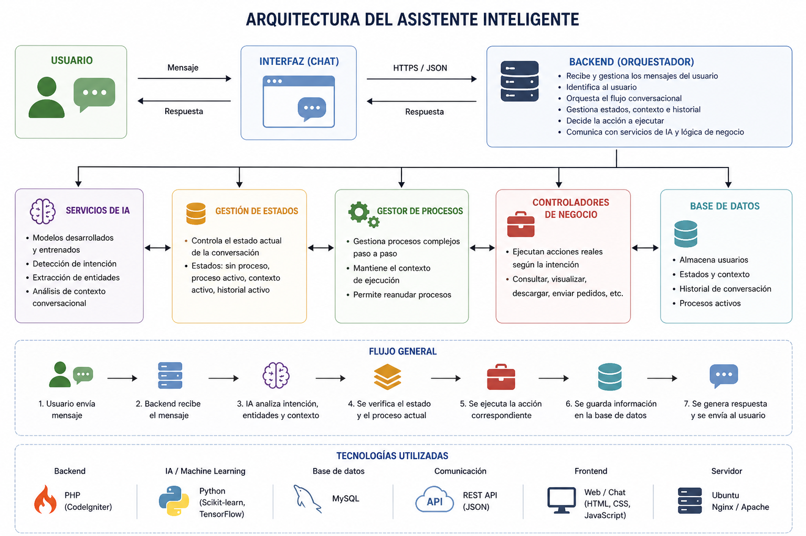

ERP Order Assistant Intelligence
🔹 Descripción
Sistema conversacional inteligente desarrollado para la automatización de consultas y gestión de pedidos en entorno empresarial. El asistente permite a los usuarios visualizar, descargar, enviar y consultar información sobre pedidos mediante lenguaje natural.
El sistema incorpora modelos de inteligencia artificial desarrollados y entrenados específicamente para el proyecto, incluyendo detección de intención (intent recognition), extracción de entidades (NER) y análisis de contexto conversacional. Estos modelos se integran con una arquitectura backend modular encargada de gestionar estados, historial y flujos multi-step.
Además, el sistema implementa lógica de negocio para interactuar con servicios internos, APIs y generación de documentos, permitiendo automatizar procesos reales dentro de la empresa.
🧩 Roles dentro del proyecto
Diseño de arquitectura del sistema
- Definición de arquitectura modular (controladores, servicios, estados, procesos, modelos)
- Diseño del flujo conversacional y gestión de contexto dinámico
Desarrollo backend
- Implementación completa en PHP (CodeIgniter)
- Desarrollo de endpoints, lógica de negocio y orquestación del sistema
- Integración con APIs externas y servicios internos
Desarrollo y entrenamiento de modelos de IA
- Entrenamiento de modelos de clasificación de intención (Intent Recognition)
- Implementación de modelos de Named Entity Recognition (NER)
- Desarrollo de modelo de detección de contexto conversacional
- Evaluación y ajuste de modelos
Integración de IA en producción
- Integración de modelos mediante servicios externos (API REST)
- Comunicación backend ↔ modelos de IA
- Gestión de respuestas en tiempo real
Motor conversacional
- Orquestación de intenciones hacia controladores específicos
- Gestión de estados
- Manejo de procesos multi-step y continuidad conversacional
Gestión de datos
- Diseño de modelos de base de datos
- Persistencia de historial, contexto y estados de usuario
Lógica de negocio
- Consulta
- Visualización
- Descarga
- Envío por correo
Optimización y control
- Manejo de errores y validaciones
- Control de sesiones y flujos de usuario
- Sistema de reset de procesos y recuperación de estado
⚙️ Arquitectura

🖥️ Tecnologías
🚀 Funcionalidades
- Gestión de pedidos por lenguaje natural
- Consulta y descarga de pedidos
- Extracción de entidades (NER)
- Clasificación de intención